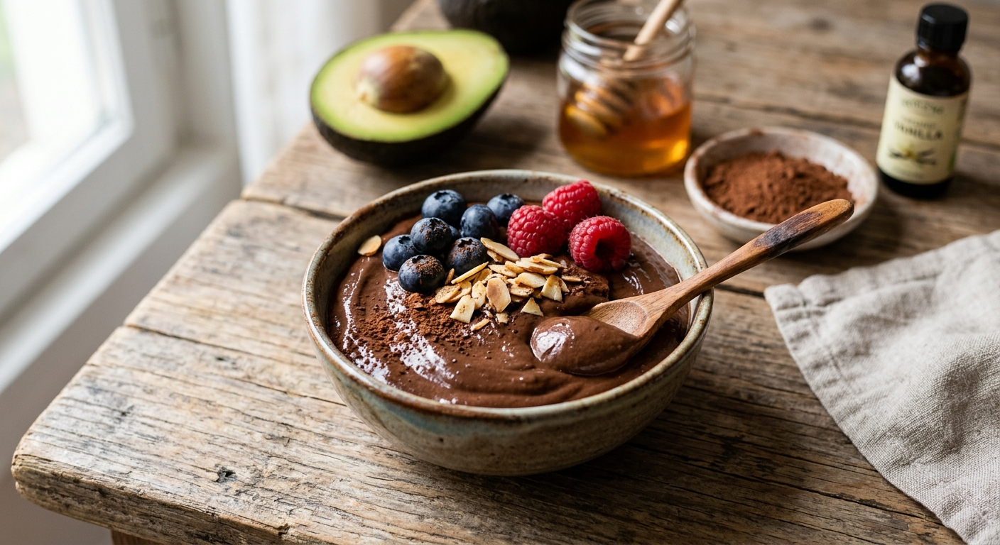

Mousse de abacate com cacau

Ingredientes
- 1 abacate maduro médio
- 3 colheres (sopa) de cacau em pó 100%
- 2 colheres (sopa) de mel ou melado
- 1 colher (chá) de extrato de baunilha
- Frutas vermelhas e amêndoas laminadas para decorar
Modo de Preparo
- Bata a polpa do abacate no processador ou liquidificador até formar um creme liso.
- Adicione o cacau em pó, o mel e a baunilha, batendo novamente até ficar homogêneo.
- Leve à geladeira por 30 minutos e sirva com frutas vermelhas por cima.